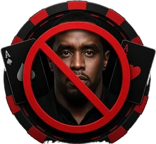

NoDiddyPoker
Connecting… · Подключаюсь…
No connection · Нет связи
Can't reach alexandertarakanov.app. Check the internet and try again.
Не получается открыть сайт. Проверь интернет и попробуй ещё раз.

Connecting… · Подключаюсь…
Can't reach alexandertarakanov.app. Check the internet and try again.
Не получается открыть сайт. Проверь интернет и попробуй ещё раз.